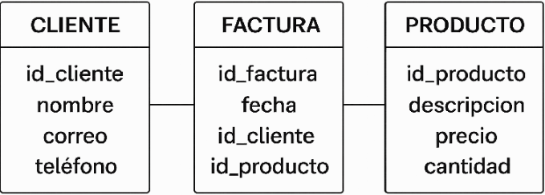

Introducción¶
Aunque en el módulo de Bases de Datos de 1º de DAM ya se estudiaron en profundidad, conviene repasar brevemente algunos conceptos clave de las bases de datos relacionales, ya que en este módulo (Acceso a Datos) trabajaremos con ellas desde el código.
En este módulo no nos centraremos en diseñar bases de datos (eso ya se vio), sino en conectarnos a ellas desde el código, consultar datos, modificarlos y automatizar operaciones con funciones, procedimientos y transacciones.
🔹BD Relacionales¶
Una base de datos relacional (BDR) es un sistema de almacenamiento de información que organiza los datos en tablas compuestas por filas y columnas, donde cada fila representa un registro único y cada columna contiene un atributo específico de ese registro. Estas BD siguen el Modelo Relacional, desarrollado por Edgar F. Codd en la década de 1970, y permite establecer vínculos o relaciones entre diferentes tablas mediante claves primarias y foráneas, facilitando así la integridad, la coherencia y la eficiencia en el manejo de grandes volúmenes de datos.
La principal ventaja de las bases de datos relacionales es su capacidad para estructurar la información de manera lógica y accesible, permitiendo a los usuarios realizar consultas complejas, analizar relaciones entre distintos conjuntos de datos y mantener la precisión y seguridad de la información. Gracias al uso del lenguaje SQL (Structured Query Language), se pueden crear, modificar, consultar y eliminar datos de forma sencilla y estandarizada, lo que las convierte en la opción preferida para una amplia variedad de aplicaciones empresariales y tecnológicas.
Las bases de datos relacionales (BDR) son esenciales en el desarrollo de aplicaciones modernas. Su integración con una aplicación requiere conectores que faciliten la comunicación entre el lenguaje de programación y el gestor de base de datos. Este tema se centra en cómo realizar esa conexión, cómo trabajar con datos mediante sentencias SQL y cómo aplicar buenas prácticas, como el cierre de recursos, el uso de transacciones y procedimientos almacenados.
Modelo Relacional (Una breve introducción)

El modelo relacional es un tipo de modelo de datos que organiza la información en tablas (también llamadas relaciones), y es la base teórica de las bases de datos relacionales.
Cada tabla representa una entidad (por ejemplo, clientes, productos, facturas) y cada fila de la tabla representa un registro individual. Las tablas se pueden relacionar entre sí mediante claves, lo que permite una organización lógica y eficiente de la información.
Tablas
Una tabla representa un conjunto de datos relacionados. Tiene:
- Filas (registros): cada fila contiene un dato completo.
- Columnas (campos): definen el tipo de información que contiene la tabla.
Ejemplo de tabla clientes:
| id_cliente | nombre | ciudad |
|---|---|---|
| 1 | Lucía | Valencia |
| 2 | Carlos | Madrid |
Clave primaria (Primary Key)
Es una columna (o conjunto de columnas) que identifica de forma única cada fila de una tabla.
Ejemplo: id_cliente es clave primaria en la tabla clientes.
Clave foránea (Foreign Key)
Es una columna que hace referencia a una clave primaria de otra tabla para establecer una relación.
Ejemplo: en la tabla facturas, el campo id_cliente puede ser clave foránea que apunta a clientes(id_cliente).
Lenguaje SQL
El lenguaje SQL (Structured Query Language) se utiliza para gestionar bases de datos relacionales.
Comandos básicos:
SELECT: consultar datosINSERT: añadir registrosUPDATE: modificar datos existentesDELETE: eliminar registrosCREATE: definir tablas, claves, relaciones, etc.
Ejemplo sencillo de consulta:
SELECT nombre FROM clientes WHERE ciudad = 'Valencia';
🔹Conectores VS ORM¶
Cuando desarrollamos aplicaciones que trabajan con información persistente, necesitamos acceder a bases de datos relacionales para consultar, insertar, modificar o eliminar datos. Existen dos formas principales de hacerlo desde el código:
- Acceso mediante conectores
- Acceso mediante ORM
1-. Acceso mediante conectores (JDBC - Java Database Connectivity)
JDBC es una API estándar de Java (y compatible con Kotlin) que permite conectarse a una base de datos, enviar instrucciones SQL y procesar los resultados manualmente. Es el método de más bajo nivel, pero ofrece un control total sobre lo que ocurre en la base de datos.
Características:
- El programador escribe directamente las consultas SQL.
- Requiere gestionar manualmente conexiones, sentencias y resultados.
- Se necesita un driver específico (conector) para el sistema gestor de bases de datos (SGBD) concreto:
Algunos ejemplos de conectores
| SGBD | Conector (Driver JDBC) | URL de conexión típica |
|---|---|---|
| PostgreSQL | org.postgresql.Driver | jdbc:postgresql://host:puerto/basedatos |
| MySQL / MariaDB | com.mysql.cj.jdbc.Driver | jdbc:mysql://host:puerto/basedatos |
| SQLite (embebido) | org.sqlite.JDBC | jdbc:sqlite:ruta_al_fichero.db |
2- Acceso mediante ORM (Object-Relational Mapping)
Un ORM es una herramienta que permite trabajar con la base de datos como si fuera un conjunto de objetos, evitando tener que escribir directamente SQL. El ORM se encarga de mapear las tablas a clases y los registros a objetos, y traduce automáticamente las operaciones del código a consultas SQL.
Características:
- Se trabaja con clases en lugar de tablas SQL.
- Ahorra mucho código repetitivo.
- Ideal para proyectos medianos o grandes que requieren mantener muchas entidades.
JPA (Java Persistence API) es una especificación estándar de Java que define cómo se deben mapear objetos Java (o Kotlin) a tablas de bases de datos relacionales. Es decir, permite gestionar la persistencia de datos de forma orientada a objetos, sin necesidad de escribir SQL directamente. Es el estándar utilizado por las herramientas ORM como Hibernate, EclipseLink, o Spring Data JPA.
Algunos ejemplos de ORMs
| ORM / Framework | Lenguaje | Descripción |
|---|---|---|
| Hibernate | Java/Kotlin | El ORM más utilizado con JPA |
| Exposed | Kotlin | ORM ligero y expresivo creado por JetBrains |
| Spring Data JPA | Java/Kotlin | Abstracción que automatiza el acceso a datos |
| Room | Java/Kotlin | ORM oficial para bases de datos SQLite en Android |
Conclusión
- JDBC es ideal para aprender los fundamentos del acceso a datos y tener control total.
- ORM es ideal para trabajar de forma más productiva en aplicaciones complejas.
Ambos métodos son útiles y complementarios: aprender JDBC ayuda a entender mejor lo que hace un ORM por debajo.
🔹Tipos de SGBD relacionales¶
Conocer qué tipo de gestor de base de datos estás utilizando es esencial para poder conectarte correctamente desde tu aplicación, ya que cada uno necesita su propio conector o driver. No existe un único tipo de sistema gestor de bases de datos (SGBD): existen varios, con características y objetivos diferente:
1- Gestores independientes (cliente-servidor)
PostgreSQL, MySQL, Oracle, SQL Server...
- Sistemas robustos y escalables, ideales para entornos multi-usuario y aplicaciones web.
- Requieren un servidor dedicado y una configuración más compleja.
- Casos de uso: aplicaciones web, servicios empresariales, sistemas con alta demanda de acceso concurrente.
2- Gestores embebidos
SQLite, H2, Derby...
- Base de datos ligera, sin servidor, ideal para aplicaciones móviles o de escritorio donde no se requiere gestión centralizada.
- Fácil de configurar y desplegar, ya que la base de datos reside en un archivo local.
- Casos de uso: aplicaciones de escritorio, móviles, prototipos, pruebas unitarias.